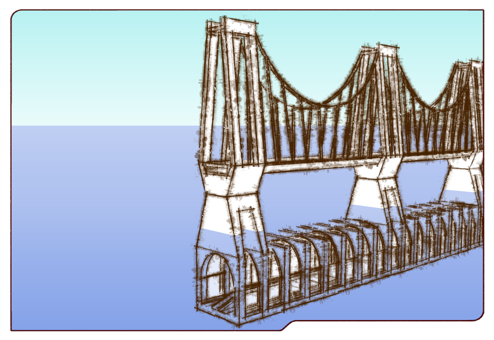

PROJECT | Bridge


This project is designed for people who lived here to reduce the travel time by making a new bridge and an underwater tunnel. For the bridge above the sea, it provides light rails for the public. This is because that the light rail has a possibly higher passenger capacity comparing to other public transport, high speed in some condition, using electricity, and less emission. Light rail can draw any source of electricity with means we could convert the wave energy into electricity and use it. By doing this way, the could help reduce the emission of the project to a lowest peak.

PROJECT | Underwater tunnel

 It is clearly showed that for the people who lived in this area is quite difficult to travel to the Sydney CBD or North Sydney. If they own vehicles, it gonna take at least 20 minutes. And if they don’t have cars, they have to use public transportation and it slightly increases the travel time. All these estimated travel time are based on the perfect traffic condition which assumes they might not meet traffic jam in the morning peak or evening peak.
It is clearly showed that for the people who lived in this area is quite difficult to travel to the Sydney CBD or North Sydney. If they own vehicles, it gonna take at least 20 minutes. And if they don’t have cars, they have to use public transportation and it slightly increases the travel time. All these estimated travel time are based on the perfect traffic condition which assumes they might not meet traffic jam in the morning peak or evening peak.